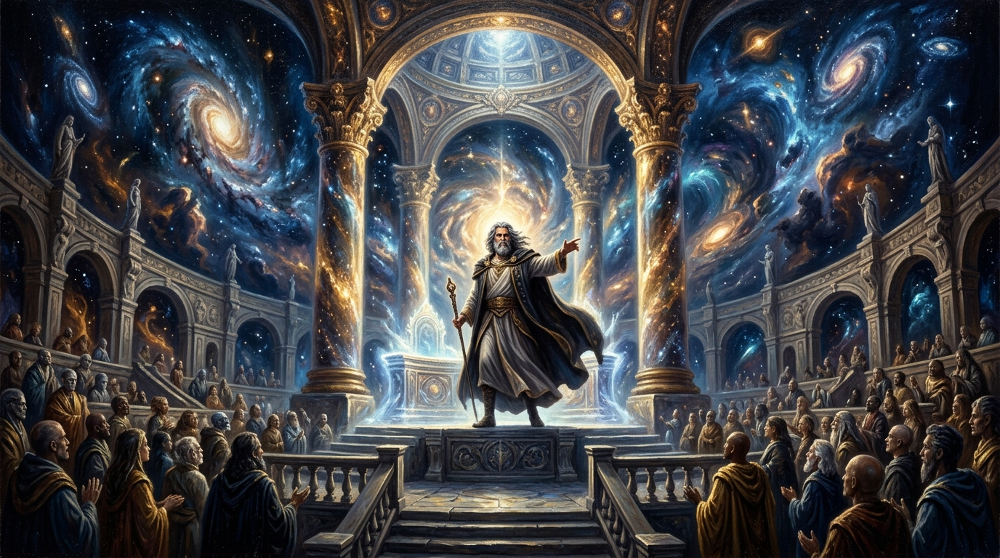

Know Thy Place
A Cosmic Don Delivers Humanity’s Final Eviction Notice

“You think you own a condo? You don’t even own the atoms in your own damn bones. The rent is decency. The rent is humility.” — Trevor Swistchew
The Celestial Tenancy & Ownership Audit
Archival Research & Thematic AnalysisThe Inception of Cosmic Title
In a celestial courtroom that silences every legalistic pretense, God appears as a seasoned cosmic arbiter. The decree is absolute: all human property is fundamentally theft. Humanity did not lay the cosmic foundations, ignite the thermonuclear stars, or synthesize the atomic lattice of matter.
God walked into the celestial courtroom like He owned the joint, because He did. His look filled the room.
The audience knew their mortality stared them in the face. God did not wait or sit. He just stood there, coat slung over His shoulder, jaw set like an old Chicago Don who'd spent eternity dealing with idiots who thought they could outsmart Him.
A few lawyers tried shuffling papers, but God flicked His fingers and every brief turned into a slice of cold pizza.
One attorney stood up, shaking like a kid caught stealing cannoli. “ Your Honour surely humanity has rights?”
God leaned in, eyes narrowing like headlights on a dark Chicago street. “Kid, nobody fucks with My universe. Nobody. You try to claim ownership of something I made? That's like trying to sell Me My own car. You know what that makes you? A clown. A cosmic clown. And I don't tolerate clowns.”
Then He turned to humanity, all of them, every last one, standing there like they'd been dragged into court for the biggest eviction notice in cosmic history.
He paced, hands behind His back, coat swinging like a cape. “I gave you a whole universe. A whole cosmic playground. And you turned it into a yard sale.”
God stopped. Looked straight at humanity. “So here's the ruling. Final. Eternal. No appeals. You don't own anything. Not the land. Not the sky. Not the water. Not the gold. Not the oil. Not the fancy penthouse you brag about. It's Mine. Always was. Always will be. I let you use My universe. I let you live in it. I let you breathe My air. I let you walk around like you're big shots. But don't forget who the landlord is. And don't forget the rent. The rent is decency. The rent is humility. The rent is not acting like a suit‑stuffed jackass who thinks profit is a personality.”
He turned to leave, coat swinging, cosmic swagger in every step. At the door, He paused.
Then He walked out, and the courtroom lights flickered like they'd just been told the truth for the first time.